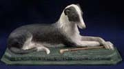

|
|
Home | Corson
Collection | Biography | Works | Image
Collection | Recent Publications | Portraits | Correspondence | Forthcoming
Events | E-texts | Contact
- Online
Literary Works about Scott
- Scott on the Stage and in
Film
- Other Pages
1. Online Literary
Works about Scott
- Naar
Walter Scott - A poetic tribute by the Dutch writer Nicolaas
Beets (1814-1903) with hypertext notes: from the Project
Laurens Jz Coster, an electronic archive of classic Dutch
literature.
- The
Funeral Day of Sir Walter Scott - A poem by Felicia Hemans
(1793-1835), published by Mary Mark Ockerbloom's A
Celebration of Women Writers site.
- A
Walter Scott: nostalgia del pulito - From Ioannes
Paulus PP. I: Servum Dei, a site dedicated to the memory
of Pope John Paul I, this Italian-language text is taken from Illustrissimi (1976),
a series of imaginary letters to historical, religious, and
mythical figures, to writers and artists, and to literary characters.
The letter to Scott evokes the writer's childhood pleasure
in reading the Waverley Novels (with particular reference to Waverley and Anne
of Geierstein) and salutes Scott as a model of healthy
literature.
- To
Sir Walter Scott, Bart. - One of the Letters to Dead
Authors (1886) by Andrew Lang (1844-1912), editor and biographer
of Scott, published by The
Literature Network.
- Old
Friends - From World
Wide School, a series of 'epistolary parodies' published
in 1890 by Andrew Lang, consisting of imaginary letters between
well-known characters from fiction or between characters and
authors. They include a) correspondence between Jonathan Oldbuck,
the eponymous hero of The
Antiquary, and Scott's real-life antiquarian friend
Robert Surtees (Letters 7 and 8),
b) Letter
10 from the Earl of Montrose to Captain Dalgetty, the soldier
of fortune of A
Legend of Montrose, concerning a dual in Dumas's The
Three Musketeers, c) Letter
24 from Baron Bradwardine to Edward Waverley on his quarrel
with Sir Hew Halbert who derided the Bradwardine family name
(see Waverley,
chapter XIV).
- The
Wizard of the North: The Life, Times and Works of Sir Walter
Scott - From Plays
by Alan Richardson, a description and sample scene from
a dramatized reading written for performance at the 2002 Edinburgh
Festival Fringe. The text is based on the words of Scott
himself, his family and friends, acquaintances and critics,
and includes extracts from The
Lady of the Lake, Waverley, and Rob
Roy. A free script can be requested from the author.
Back to Top
2. Scott
on the Stage and in Film
- The
Adelphi Theatre 1806-1900: The 1823-1824 Season - From The
Adelphi Theatre 1806-1900: A Calendar of Performances,
a site maintained by members of Eastern
Michigan University English Department, this page discusses
contemporary reviews of adaptations of Waverley, The
Heart of Mid-Lothian, and St.
Ronan's Well. The site also includes a list of
all plays performed at the London theatre, including a number
of further Scott adaptations.
- Playbills
of the Theatre Royal Edinburgh 1800-1850 - From the National
Library of Scotland, a page providing access to clickable
images of playbills from the library's collection, including
bills for nineteen performances of Rob Roy MacGregor; or,
Auld Lang Syne (adapted from Rob
Roy) (1819-25), eight performances each of Guy
Mannering (1819-25) and The
Heart of Mid-Lothian (1820-24), five of The
Antiquary (all 1821), four each of The
Bride of Lammermoor (1822-25) and The
Talisman (all 1825), three each of Ivanhoe (all
1823) and St. Ronan's
Well (all 1824), two of Waverley (1824-25),
and one apiece of Kenilworth (1824)
and Redgauntlet (1825).
- Scott at the
Movies - From the Internet
Movie Database, a list of film and TV adaptations of Scott,
from J. Stuart Blackton's 1909 film The Bride of Lammermoor:
A Tragedy of Bonnie Scotland to the present day. Also
includes a list of films in which 'Hail to the Chief' (extracted
from The Lady of the
Lake) is sung.
Back to Top
3. Other
Pages
- Extracts
from Robert Walker's Diary, 1867-1877 - From the North
East Folklore Archive, the diary of Robert Walker of Richmond
(1815-1890), a Peterhead businessman and local historian, includes
an entry on how Scott's centenary was celebrated in Peterhead,
August 14, 1871.
- 'The
Gastronomic World of Sir Walter Scott' - From Frank
R. Shaw's pages on Electric
Scotland, this article by Kay Shaw Nelson, author of The
Art of Scottish American Cooking, shows that Scott's novels
provide 'a wealth of valuable and fascinating information for
food historians and devotees of Scottish gastronomic lore'.
- Paddle
Steamer Picture Gallery - Tom Lee's Picture Gallery includes
links to images of the steamer 'Sir
Walter Scott', and of steamers named after Scott's works
or characters: the 'PS
Dandie Dinmont' (built 1866), 'PS
Madge Wildfire' (built 1886, later renamed 'Fair Maid'), 'PS
Jeanie Deans' (built 1884), a later
ship of the same name (built 1931), 'PS
Kenilworth' (built 1898), 'PS
Lord of the Isles' (built 1877), a later
ship of the same name (built 1891), 'Lucy
Ashton' (built 1888), 'PS
Marmion' (built 1906), 'PS
Redgauntlet' (built 1895), the 'PS
Talisman' (built 1896), 'DEPV
Talisman' (built 1935), the 'PS
Waverley' (built 1899), and a later
ship of the same name (built 1946).
- Phrases
Coined by Sir Walter Scott - From The
Phrase Finder, a site which lists the meanings and origins
of over 1,200 English sayings, phrases and idioms, this page
discusses Scott's position as the third-most fertile coiner
of English phrases after the King James Bible and Shakespeare.
There is a discussion of Scott's coinage of 'caught red-handed'
with links to entries on further phrases for which Scott is
either 'father or midwife'.
- The
Scottish Deerhound - From a site devoted to the breed,
this page (accessible in Dutch or English) describes Scott's
love of the deerhound, with an extract from The
Talisman and an image of Landseer's painting of his
dog Maida.
- The Scottish-Israelite
Food Taboos - From Brit-Am,
the 'official website for the Lost Tribes of Israel', this
article by Yair Davidiy quotes extensively from Scott to show
that the Scots traditionally followed Mosaic Law in regarding
pork as taboo.
- Walter
Scott, Lord Penzance and Roses - From the Rosegathering site
('Dedicated to roses in art, gardens, and history'), this page
discusses the enthusiasm of the nineteenth-century judge and
amateur horticulturist James Plaisted Wilde, Baron Penzance,
for Scott, which led him to name fourteen Hybrid Eglanteria
roses after Scott characters.
Back to Top

Back to Index
of Links
Last updated: 20-June-2008
© Edinburgh University Library
|
|